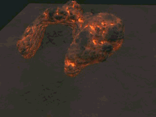
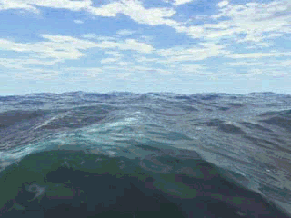

Maya“流体效果”(Fluid Effects)是一种真实地模拟和渲染流体运动的技术。使用“流体效果”(Fluid Effects)可以创建各种 2D 和 3D 大气、爆破效果、太空和液体效果。可以使用“流体效果”(Fluid Effects)解算器来模拟这些效果，或者可以使用流体动画纹理来获得更加独特的、与众不同的效果。
“流体效果”(Fluid Effects)还包括一个用于创建逼真的开阔水面的海洋着色器。可以使对象漂浮在海洋表面上，并让这些对象对水的运动作出反应。
使用“流体效果”(Fluid Effects)可以创建下列类型的效果：
|
真实的大气效果，如云、霭、雾、蒸汽和烟。 |
爆破效果，如射击、爆炸以及核冲击波。 |
|
粘滞的流体，如熔化的熔岩和泥桨。 
|
开阔水面，如具有白色浪尖和泡沫的平静的或汹涌的海洋。 
|
为了帮助您创建自己的流体效果，Maya 提供了一整套示例流体文件。这些文件包含流体、几何体、着色器、灯光和环境，支持快速创建所需的效果。此外，随附的示例流体文件还预定义了初始状态（或缓存），其中描述了流体模拟的初始起始点（例如，云）、属性预设（定义了特定效果的属性设置）以及示例节点的节点信息（有助于确定如何使用每个示例）。可将这些示例文件导入场景、播放并在无改动的情况下对其进行渲染，也可对其进行修改，以自定义效果。
若要访问示例流体文件、初始状态和预设，请选择“流体效果 > 获取流体示例”(Fluid Effects > Get Fluid Example)。
有关如何使用流体示例的信息，请参见导入流体示例。
为了帮助您了解“流体效果”(Fluid Effects)、Maya 随附提供了“流体效果”(Fluid Effects)教程。“流体效果”(Fluid Effects)教程是《Maya 快速入门》部分中众多的综合教程之一，可通过 Autodesk 网站访问。